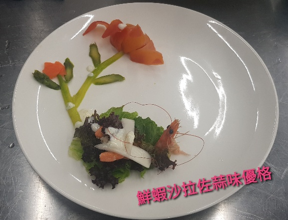
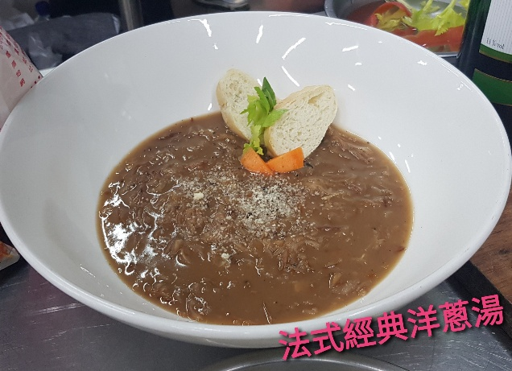
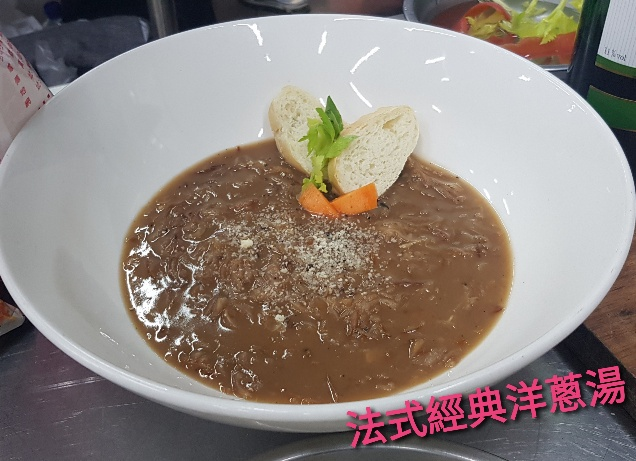

材料
- 蘿蔓生菜
- 紅卷生菜
- 紅酸模
- 白蝦
- 蒜頭
- 優格
- 蜂蜜
做法
(1)蝦子燙熟剝皮擺盤生菜冰鎮後擺盤，蘆筍紅蘿蔔削皮下去煮燙熟撈起擺盤。
(2)優格醬:優格一罐，蒜末，蜂蜜白酒一瓶蓋扁豆少許。
法式經典洋蔥湯

材料
- 高筋麵粉
- 洋葱絲
- 橄欖油4大匙
- 高湯1000ml
- 乳酪粉
做法
- 將洋蔥去皮切成薄片後,在鑄鐵鍋中以奶油、橄欖油小火慢炒20分鐘
洋蔥炒軟略成泥狀。
- 加入麵粉拌勻，再放入高湯後煮30分鐘熄火。
冰葡萄柚綠

材料
- 半顆甜橙(約50ml-60ml)榨汁
- 綠茶3克，水100~120ml(4分鐘)冰鎮~冷卻
- 蜂蜜10ml~15ml
- 糖漿10ml
做法
- 葡萄柚榨汁，綠茶3克加水100ml (4分鐘)冷卻-冰鎮。
- 把作法1加入蜂蜜10ml-15ml，糖漿10ml再放入少許冰塊。
鮮蝦沙拉佐蒜味優格
法式經典洋蔥湯
冰葡萄柚綠
心得報告
-
材料
- 蘿蔓生菜
- 紅卷生菜
- 紅酸模
- 白蝦
- 蒜頭
- 優格
- 蜂蜜 做法 (1)蝦子燙熟剝皮擺盤生菜冰鎮後擺盤，蘆筍紅蘿蔔削皮下去煮燙熟撈起擺盤。 (2)優格醬:優格一罐，蒜末，蜂蜜白酒一瓶蓋扁豆少許。
法式經典洋蔥湯
-
材料
- 高筋麵粉
- 洋葱絲
- 橄欖油4大匙
- 高湯1000ml
- 乳酪粉 做法
- 將洋蔥去皮切成薄片後,在鑄鐵鍋中以奶油、橄欖油小火慢炒20分鐘 洋蔥炒軟略成泥狀。
- 加入麵粉拌勻，再放入高湯後煮30分鐘熄火。
冰葡萄柚綠
-
材料
- 半顆甜橙(約50ml-60ml)榨汁
- 綠茶3克，水100~120ml(4分鐘)冰鎮~冷卻
- 蜂蜜10ml~15ml
- 糖漿10ml 做法
- 葡萄柚榨汁，綠茶3克加水100ml (4分鐘)冷卻-冰鎮。
- 把作法1加入蜂蜜10ml-15ml，糖漿10ml再放入少許冰塊。 鮮蝦沙拉佐蒜味優格 法式經典洋蔥湯 冰葡萄柚綠 心得報告